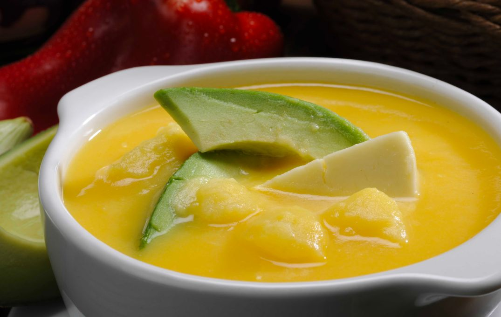

Locro de Papa
Back to Recipes

Description
Locro de Papa is a beloved Ecuadorian dish that embodies the rich culinary
traditions of the Andean highlands. This velvety, creamy potato soup combines
simple ingredients to create a deeply satisfying meal. Typically garnished
with avocado and crumbled fresh cheese, Locro de Papa offers a delightful
contrast in textures and flavors.
Perfect for warming you up on a chilly Andean day, this Ecuadorian staple
is a cherished comfort food in the sierra region. Versatile in its presentation,
Locro de Papa can be served as a hearty starter or main course. Enjoy a taste
of Ecuador's culinary heritage.
Ingredients
- 2 1/2 cups peeled potato, cut into 1-inch cubes
- 6 cups water
- 1/2 cup milk
- 1 cup grated fresh cheese
- 1 tablespoon finely chopped white onion
- 1 tablespoon annatto oil
Instructions
- In a pot over medium heat, add the annatto oil and chopped onions.
- Once the onions start to brown, add the water and potato cubes.
- Add salt to taste and boil until the potatoes become soft.
- Mash 1/2 to 3/4 of the potatoes and continue boiling.
- Turn off the heat, add the milk, and stir well.
- Serve in bowls and top with grated cheese and a slice of avocado.
- Enjoy your Locro de Papa!
Back to Recipes